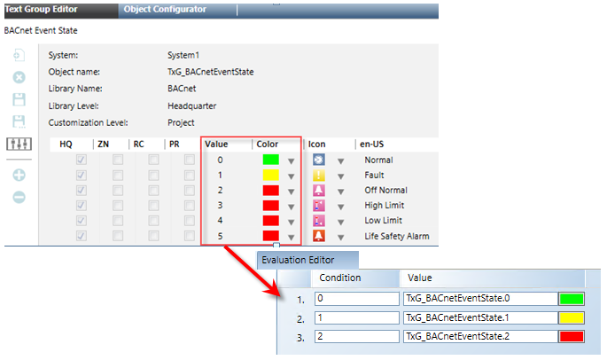

Configure an Element Based on Event Conditions
You have an element on your graphic; it can be a part of a floor plan or represent an area or a device. You want to configure an element’s color property (Fill, Stroke, or Background) to change based on event conditions.
In this procedure, the Event_State of a Life Safety data point is used to apply the Fill color to the element on the graphic.
- System Manager is in Engineering mode.
- You have the name of the Text group table that represents the various states of the data point property you are monitoring.
- Click a drawing element and then draw a desired shape for the element. If you already have an element on the canvas that represents the area or device you want to monitor, proceed to Step 2.
- Select the element on the canvas, and from the Property View, expand the property whose condition you want to monitor. In this example, expand the Colors section and select Fill.
- In the View tab, place a check mark next to the Evaluation Editor.
- The Evaluation Editor view displays.
- From the Property drop-down menu, select Fill, and then from the Type drop-down menu, select Discrete.
- In System Browser, select the designated data point that you want to monitor, and then do one of the following:
- Drag the data point to the Evaluation Editor’s Expression field and at the end of the expression type a period “.”, followed by the property name. In this example:
.Event_State. - From the Extended Operations tab, navigate to the data point’s property that is receiving the evaluation, and then drag the property into the Expression field. The data point with the appended property name display in the field. In this example, navigate to the Event State property.
- In the Condition field, use the integers from the Text Group table associated with the property of the data point you are monitoring. For each condition, do the following:
- In the Condition field, enter the integer from the Text Group table. For example:
0. - In the Value field, type the Text Group table name and then [.] and the corresponding integer value. For example:
TxG_BACnetEventState.0. - To add a new Condition row, click Insert New Condition.

- Click Save.